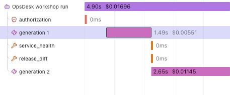

Follow one agent run.
You have an answer. Now discover which steps produced it, where the time went and what was sent to observability.
First connect your app → Download the complete lab (.md)
A trace is the receipt for one action.
App: the button and answer. Harness: the code that checks access, runs the model and permits tools. OpenTelemetry: the format carrying the recorded steps. Langfuse: the place you inspect those steps.
- Trace
- One investigation from start to finish.
- Observation / span
- One recorded step inside that investigation.
- Generation
- A real model call, with its returned model name and reported usage.
- Session
- A label grouping related traces. This demo uses a random label, not an email.
Find the same run in both places.
- In your actual OpsDesk app, inspect a completed analysis. Open Agent trace when your build includes it, or expand Run inspector in the earlier version.
- Check Langfuse export status. Not configured means no configured exporter; acknowledged means the exporter received a successful response. Neither is independent readback. The app deliberately keeps its readback status unverified because it has only ingestion access; your separate signed-in Langfuse session performs the read check.
- Reveal and copy the real trace ID privately. Open your own Langfuse project in a second tab. Do not copy account details or keys into the course.
- Open Tracing. Choose a time range containing the run. Use the available filter/search control for the exact trace ID. If the current layout lists observations, open an observation and inspect its parent trace. Alternatively locate the random session label through Sessions.
- Match the exact ID, then check the name and time. A similar name alone is insufficient.
See the actual new in-app trace panel. Its event list and the server span tree are different representations: compare only the fields each actually records.
Look for: one matching trace with actual observations. The live UI labels can vary by Langfuse version; Tracing may list observations rather than one row per trace.
Read the six-step story.

Select Tree. Expand the agent root. In this recorded run, access was checked, generation 1 requested evidence, service_health and release_diff returned synthetic evidence, and generation 2 produced the answer. These are two calls by one agent, not two agents. A different valid run may have another number of calls.
Click a step to understand it
Recorded example · no provider calls or live project connection.
Select the agent root or a child step.
Find the waiting time.
Select Timeline on that same trace. Look at each bar's start and duration. Do not add overlapping spans to estimate total time; the root already measures the full instrumented run.

Try: point to the slower generation. Here generation 2 took about 2.65 seconds versus 1.49 seconds for generation 1. This is one sample, not a model benchmark or a service-level promise.
Read tokens before discussing cost.
Return to Tree. Select generation 1, then open its token count. In the observed UI this opens a usage breakdown. Find the returned model in the observation's Attributes or table model column.
| Recorded call | Input | Output | Total |
|---|---|---|---|
| generation 1 | 311 | 48 | 359 |
| generation 2 | 450 | 139 | 589 |
| Whole run | 761 | 187 | 948 |
These counts came from the actual rehearsal and independent provider readback. Your response can differ. Tokens are pieces of text, not an exact word count. A model may report additional categories such as cached or reasoning tokens; preserve their meaning rather than silently adding or double-counting them.
The app leaves cost unknown without matching rates. Langfuse can calculate cost from a recognized model and its configured prices. That number may differ from subscription credits, discounts, gateway pricing or the eventual bill. Missing usage is unknown, not zero.
Check what you chose not to send.
Select the root and each child. Inspect Preview and Attributes. In the verified run, Input and Output were absent on all six observations. This is deliberate: the workshop exports metadata only, excluding prompts, answers, ticket text, tool payloads, account identity and secrets. The answer remains visible in the app.
Expected attributes include the actual returned model, reported usage, random session label and validated synthetic tool metadata. A trace explains recorded execution; it does not reveal hidden chain-of-thought, certify factual accuracy or enforce access permissions.
Explain a missing trace without rerunning AI.
| What you see | Next action |
|---|---|
| Not configured | Save the three fields in this project's server Secrets. Refresh its supported preview; run Check telemetry setup. |
| Configuration present | Presence alone proves no credential validity or delivery. |
| Export failed / partial | Inspect destination, role/expiry, supported OTLP path and bounded error status. The reference includes fixed failure labels and safe hints for flush, serialization, request setup, timeout, transport, HTTP and response parsing. It prints no exception text or auth headers. Redirects are inspected in manual no-follow mode: a 3xx is a failed export, not permission to send credentials to the target. |
| Acknowledged, nothing visible | Check the intended project, time range, exact trace/session and filters. Wait and read again before any new inference. |
| No tokens or cost | Check actual provider usage and model mapping. Keep unavailable values unknown. |
A change request in OpsDesk should stop before model construction: zero generations. The explicit-change stop and its two-observation policy trace are now independently verified. See the actual app and provider screenshots. Expect a root and authorization, no generation, and root metadata status approval_required with model_calls 0. This verifies the explicit change path, not universal attack resistance.
0 of 6 tasks checked · self-reported, reset on reload
Check your understanding
- Are two generations two agents? No. They are two model calls inside one agent run.
- Does an export acknowledgment prove the intended project has the trace? No. Match its exact ID in that project.
- Can an ingestion-only key read traces for an embedded dashboard? No. Keep it write-only. Use your signed-in Langfuse session. A future app reader requires separate scoped access and authorization.
- Does tracing make a tool safe? No. Code, access checks, schemas and permissions enforce the boundary.
- Can I inspect this lab without paid calls? Yes. Use the recorded screenshots or your existing trace.
Go deeper when you need it
- Trace structure — scope, types and correct nesting.
- Usage and cost — ingested versus calculated values and model definitions.
- Trace IDs — correlate the same request across systems.
- Connection and local runtime lab — setup choices and troubleshooting.